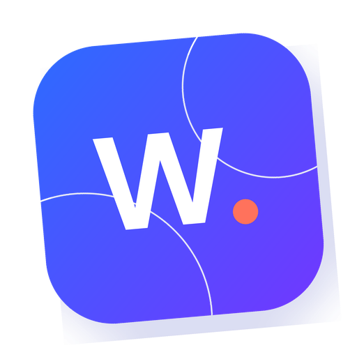

Veilige verbinding
SSL en correcte doorverwijzingen.
Hosting · Beveiliging · Back-ups · Support
Altijd beschikbaar.We bewaken bereikbaarheid en grijpen in wanneer de techniek aandacht nodig heeft.
Actief beschermd.SSL, beveiligingsupdates en controles verkleinen risico’s voordat ze problemen worden.
Snel hersteld.Met automatische back-ups staat er altijd een recent en betrouwbaar herstelpunt klaar.
Managed hosting.Een professioneel ingerichte omgeving met caching, SSL en passende servercapaciteit.
Continu onderhoud.Updates, controles en optimalisaties worden gepland en zorgvuldig uitgevoerd.
Persoonlijke support.Je spreekt direct met Webschets wanneer je een vraag, storing of wijziging hebt.
Hosting is pas zorgeloos wanneer iemand de signalen begrijpt. Daarom combineren we monitoring, onderhoud en support in één beheerde dienst.
Vier beveiligingslagen werken voortdurend samen. Zo blijft je website veilig, actueel en betrouwbaar — zonder technisch gedoe.
SSL en correcte doorverwijzingen.
Updates sluiten kwetsbaarheden.
Gerichte rechten en sterke accounts.
Afwijkingen worden vroeg gesignaleerd.

We maken automatisch herstelpunten van de website en relevante gegevens. Wanneer herstel nodig is, beoordelen we eerst het juiste moment en zetten we gecontroleerd terug.
Niet iedere taak hoeft dagelijks, maar iedere taak moet op het juiste moment gebeuren. Dit ritme houdt de technische basis gezond.
Bereikbaarheid bewaken en actuele herstelpunten veilig vastleggen.
Software bijwerken, functies nalopen en technische meldingen beoordelen.
Belangrijke signalen volgen en optimaliseren wanneer dat aantoonbaar nodig is.
Direct schakelen bij vragen, wijzigingen of onverwachte technische problemen.
Je hoeft geen servertermen te kennen of verschillende leveranciers te bellen. Webschets kent de website, onderzoekt de vraag en vertelt duidelijk wat er nodig is.
De precieze inrichting stemmen we af op jouw website. Deze onderdelen vormen de vaste basis van onze managed dienst.
Professioneel ingericht en volledig beheerd.
Iedere verbinding veilig versleuteld.
Recente herstelpunten staan altijd klaar.
Onderhoud zorgvuldig en tijdig uitgevoerd.
Bereikbaarheid en signalen continu in beeld.
Direct contact met iemand die je site kent.
Drie niveaus met een heldere basis. Kies hoeveel monitoring, capaciteit en ondersteuning jouw website nodig heeft.
Voor compacte websites die veilig, snel en actueel moeten blijven.
Voor professionele websites die actieve monitoring en betrouwbare ondersteuning vragen.
Voor groeiende websites met meer capaciteit, intensievere bewaking en snellere support.
Kies het Webschets Care-pakket dat past bij de monitoring, capaciteit en ondersteuning die jouw website nodig heeft.
Vergelijk jouw opties ↗Vergelijk alleen de verschillen die ertoe doen. Care+ is voor de meeste zakelijke websites de beste balans tussen actief beheer, monitoring en persoonlijke support.
| VergelijkingBelangrijkste verschillen | Goede basisCare€ 49,95 p/m | AANBEVOLENBeste balansCare+€ 69,95 p/m | Maximale zekerheidCare Pro€ 89,95 p/m |
|---|---|---|---|
| Beste keuze voor | Compacte websites | Zakelijke websites | Groeiende en kritieke websites |
| Monitoring | Bereikbaarheid | Bereikbaarheid + performance | Uitgebreid en proactief |
| Technisch beheer | Reguliere updates | Actief beheerd | Proactief beheerd |
| Support | Op aanvraag | Persoonlijke support | Support met prioriteit |
| Back-ups | Dagelijks | Dagelijks + controle | Uitgebreid + controle |
Dat hangt af van de gebruikte techniek en huidige staat. We controleren eerst wat nodig is voor een veilige en betrouwbare verhuizing.
We onderzoeken de oorzaak, herstellen de bereikbaarheid en gebruiken indien nodig een geschikt herstelpunt.
Klein technisch beheer valt binnen de dienst. Voor nieuwe pagina’s, functies of omvangrijke contentwijzigingen maken we vooraf een duidelijke inschatting.
Standaard dagelijks. Bij websites met veel veranderende gegevens kan een andere frequentie passender zijn.
Ja. We beoordelen capaciteit en beheer opnieuw wanneer bezoekersaantallen, functionaliteit of bedrijfsbehoeften veranderen.
Laat Webschets de hosting en het onderhoud beheren, zodat jij je kunt richten op je bedrijf.
Bespreek jouw hosting ↗